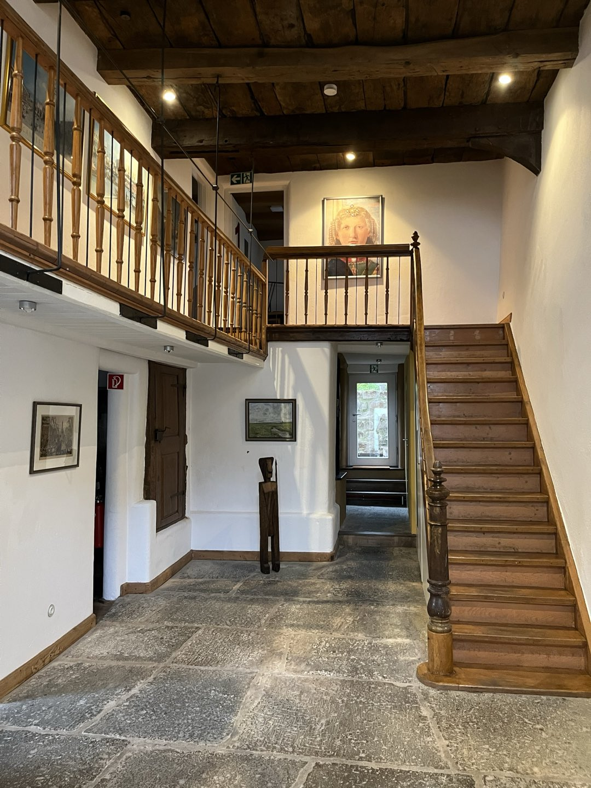

Gemeinschaftspraxis in Bad Salzuflen
Psychotherapie am Salzhof
Drei Psychotherapeut:innen, ein methodisch breites Angebot – mitten in der historischen Altstadt von Bad Salzuflen, direkt am Salzhof.
Gemeinsam decken wir alle drei Richtlinienverfahren ab: Verhaltenstherapie, tiefenpsychologisch fundierte und analytische Psychotherapie – ergänzt um Hypnotherapie, Psychodrama und systemische Ansätze.

Auf einen Blick
Drei Perspektiven, eine Praxis
Team
Zwei Diplom-Psycholog:innen und eine Diplom-Psychologin (Dr. rer. nat.) mit sich ergänzenden Schwerpunkten und Verfahren.
Leistungen
Verhaltenstherapie, tiefenpsychologisch fundierte und analytische Psychotherapie sowie Hypnotherapie, Psychodrama und systemische Verfahren.
Die Praxis
Ein denkmalgeschütztes Fachwerkhaus direkt am Salzhof – historische Bausubstanz, helle Räume, ruhige Atmosphäre.
Standort
Ein besonderes Haus am historischen Salzhof
Unsere Praxis liegt in einem denkmalgeschützten Fachwerkhaus direkt am Salzhof, dem historischen Mittelpunkt der Salzsiederstadt Bad Salzuflen – fußläufig zum Kurpark und zu allen Kureinrichtungen.
Massive Holzbalken, ein Natursteinboden und eine offene Galerie treffen auf helle, freundliche Räume: der Charme des historischen Fachwerkhauses verbindet sich mit einer ruhigen, undklinischen Atmosphäre zum Ankommen.
Erstkontakt & Sprechzeiten
Termine vereinbaren wir ausschließlich telefonisch nach Vereinbarung. Alle Kontaktdaten und Sprechzeiten finden Sie auf einen Blick auf der Kontaktseite.